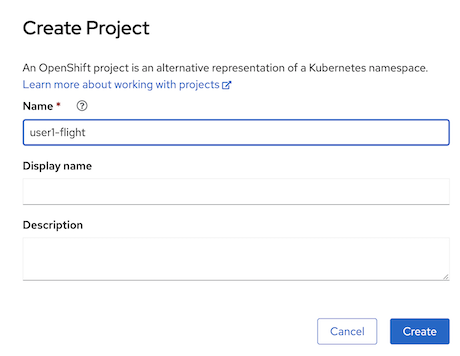
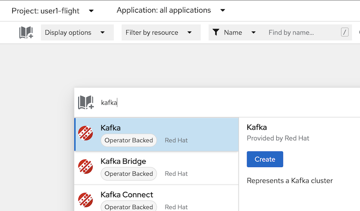
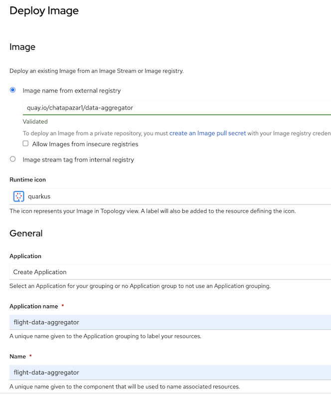
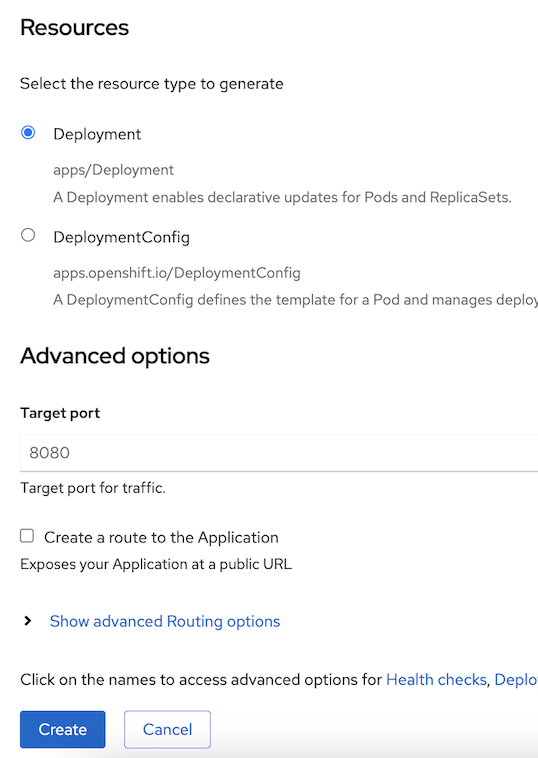
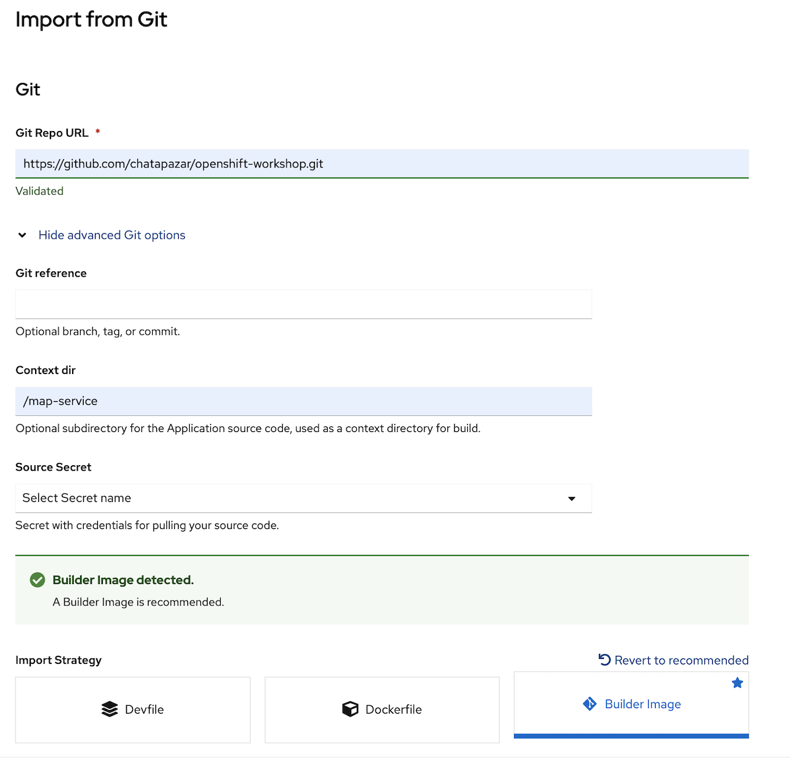
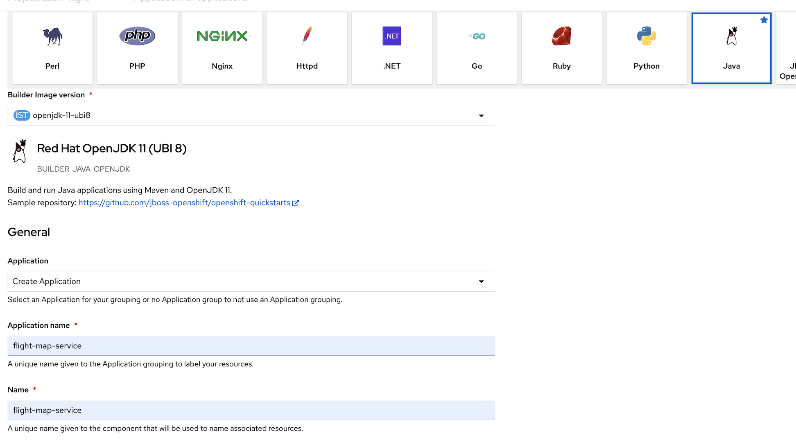
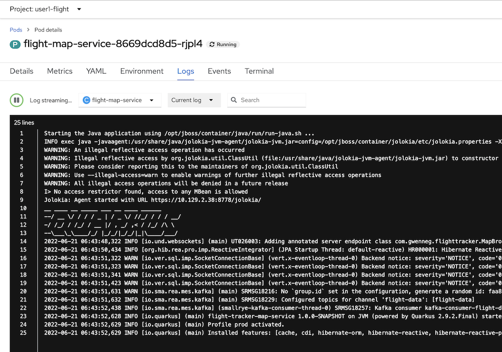
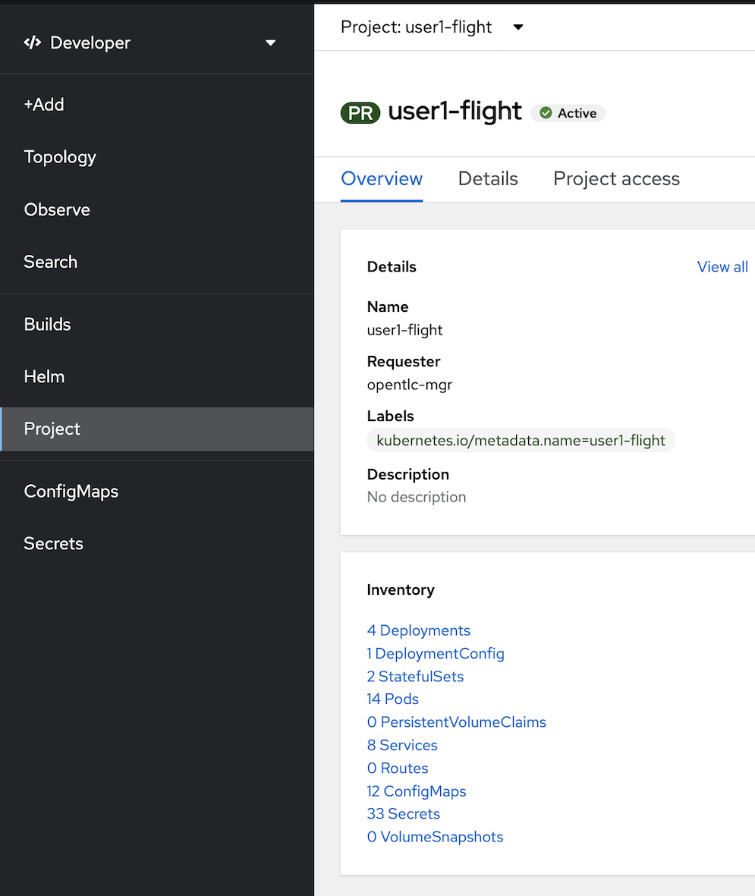

Live Flight Tracker Demo
Architecture of the demo
- map-service: web application with websocket, rest api for interact with browser for show and receive command for simulate live flight tracker
- postgresql: relational database for airport data
- data-simulator: backend service for simulation live flight (simulate radar data and transponder data to kafka)
- kafka broker: messaging system for integrate data between system
- data-aggregator: streams processing service for aggregate (merge) radar data and transponder data to flight data and put it back to kafka for display from map service
Step by Step to Deploy Live Flight Tracker on OpenShift
- Create Project for Live Flight Tracker
- open openshift developer perspective, click "Project" from left menu, click "create a Project"
- in create project panel,
- set Name: \
- click "create" 
- set Name: \
- Create Kafka on OpenShift
- click Topology in left menu

- click add icon (book with plus sign, right top, near Display options)
- type "kafka" in search box, select "Kafka" and click Create 
- in Create Kafka, leave all default, click create
- wait until kafka complete deployment, you will see 3 deployment in kafka "my-cluster" (wait until all 3 deployment circle change to dark blue)
- click Topology in left menu
- Create Topic in kafka
- in Topology, click add icon (book with plus sign, right top, near Display options)
- type "topic", select Kafka Topic, click Create
- in create kafkatopic panel,
- change Name to "flight-data"
- leave other to default, click create
- repeat create kafkatopic with name "radar-data" and "transponder-data"
- check kafkatopic, in Topology, in my-cluster kafka, click on my-cluster-kafka statefulset (see example in below picture)
- in right panel popup, click in Resources tab, in Pods section, click view logs link in first pod (such as my-cluster-kafka-0)
- after page change to Pod information page, change tab from Logs to Terminal
- openshift will open terminal to pod, in terminal type below commond to check topic in kafka (flight-data, radar-data, transponder-data)
sample output (if you create correct!)./bin/kafka-topics.sh --bootstrap-server=localhost:9092 --list__consumer_offsets __strimzi_store_topic flight-data radar-data transponder-data
- Create Database Postgresql
- click +Add in left menu, in Developer Catalog, select Database
- type "postgresql" in search box, select PostgreSQL (Ephermeral)
- click Instantiate Template
- In Instantiate Template page, set value
- leave all default except,
- Database Service Name: "postgresql"
- Connection Username: "flighttracker"
- Conneciton Password: "flighttracker"
- Database Name: "flighttracker"
- click create
- wait until postgresql change to dark blue circle
- Deploy Data-Aggregator from Container Image
- click +Add left menu, select Container images
- in deploy image page,
- select Image name from external registry
- type "quay.io/chatapazar1/data-aggregator"
- runtime icon: change to quarkus
- Application: select Ceate Application
- Application Name: "flight-data-aggregator"
- Name: "flight-data-aggregator"
- resource: Deployment
- target port: 8080
- uncheck create a route to the application
- click create  
- wait until flight-data-aggregator circle change to dark blue color
- click flight-data-aggregator, select resources tab, click view logs in first port

- openshift console will display log of flight-data-aggregator, Verify that there are no errors
- Deploy Data-Simulator from Git Repository (S2I/OpenShift Build)
- click +Add in left menu

- in Import from Git page, set Git Repo URL to : https://github.com/chatapazar/openshift-workshop.git
- click show advanced git options
- set Context dir to : /data-simulator
- select Import Strategy to Builder Image
- select Java
- select Builder Image version to : openjdk-11-ubi8
- in General, Application, select Create Application
- set Application name to : flight-data-simulator
- set name to : flight-data-simulator
- in resources, select deployment
- in advanced options, leave default target port
- uncheck create a route to the application and click Create
- in Topology view, click circle "(D) flight-data-simulator" for show deployment information popup in right side of developer console
- in flight-data-simulator information page, click Resources tab, scroll down to Builds section, wait until Build #1 was complete or click View logs for view s2i build your code to container image
- after build complete, flight-data-simulater circle will change to dark blue color, click view logs in Pods section to view application log, Verify that there are no errors
- click +Add in left menu
- Deploy Map-Service from Git Repository (S2I/OpenShift Build)
- click +Add in left menu, select Import from Git
- in Import from Git page, set Git Repo URL to : https://github.com/chatapazar/openshift-workshop
- click show advanced Git options
- set Context dir to : /map-service
- Import Strategy select Builder Image, 
- select Java,
- set Builder Image version to : openjdk-11-ubi8
- Application set to Create Application
- Application name: flight-map-service
- Name: flight-map-service 
- in resources section, select deployment, leave default target port 8080
- uncheck Create a route to the Applicaiton, click Create
- in Topology view, click circle "(D) flight-map-service" for show deployment information popup in right side of developer console
- in flight-map-service information page, click Resources tab, scroll down to Builds section, wait until Build #1 was complete or click View logs for view s2i build your code to container image
- after build complete, flight-data-simulater circle will change to dark blue color, click view logs in Pods section to view application log, Verify that there are no errors 
- Create Route for flight-map-service
- click Project in left menu, select Project: \
-flight - in Overview tab, scroll down to Inventory section, select Route 
- in Route page, click Create Route
- in create route page, leave all default except:
- name: flight-map-service
- Service: select flight-map-service
- target port: 8080-->8080(TCP)
- uncheck secure route, click create
- back to topology view, in flight-map-service, You will see a route icon in the top right corner of flight-map-service circle (or click flight-map-service circle and see details in flight-map-service deployment information page, resources tab)
- click Project in left menu, select Project: \
- (Optional) Change Icon and Add Connection Info in Topology (add more information in Topology)
- back to Topology view (click Topology in left menu)
- click flight-data-simulator circle, in (D) flight-data-simulator deployment information, select details tab
- scroll down to Labels section click edit link
- in edit labels popup, remove label "app.openshift.io/runtime=java" (click x icon)
- type "app.openshift.io/runtime=quarkus" to add new icon to this deployment, click save
- verify flight-data-simulator change icon from duke to quarkus
- Repeat with the other components as follows:
- flight-map-service, remove label "app.openshift.io/runtime=java", add label "app.openshift.io/runtime=quarkus"
- postgresql, add label "app.openshift.io/runtime=postgresql"
- add connection to topology (For cosmetic purposes only, not a real conneciton between components.), click web terminal icon at top right conner (">_" icon)

- wait until command line terminal show in buttom of developer console

- set current project to your project ('\
-flight') such as user1-flight
sample outputoc project <your username>-flightNow using project "user1-flight" on server "https://172.30.0.1:443". - set connection with oc annotate command, type below command in web terminal
oc annotate deployment flight-map-service 'app.openshift.io/connects-to=[{"apiVersion":"apps.openshift.io/v1","kind":"DeploymentConfig","name":"postgresql"},{"apiVersion":"apps/v1","kind":"Deployment","name":"flight-data-simulator"},{"apiVersion":"kafka.strimzi.io/v1beta2","kind":"Kafka","name":"my-cluster"}]' oc annotate deployment flight-data-simulator 'app.openshift.io/connects-to=[{"apiVersion":"kafka.strimzi.io/v1beta2","kind":"Kafka","name":"my-cluster"}]' oc annotate deployment flight-data-aggregator 'app.openshift.io/connects-to=[{"apiVersion":"kafka.strimzi.io/v1beta2","kind":"Kafka","name":"my-cluster"}]' - check result in topology view
- Test Live Flight Track Demo
- in topology view, click route icon of flight-map-service for open web application
- browser will show Live Flight Tracer demo

- click checkbox show slifht creation form and show websocket log

- click start this flight button or start 20 random flights button and see simulation in your browser